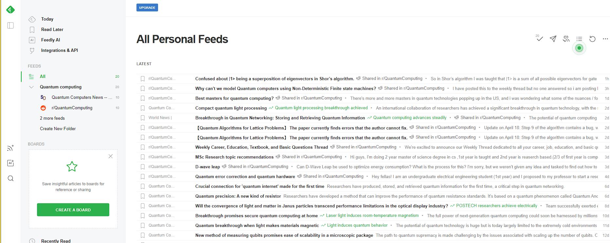

Bienvenu dans mon portfolio
Je m'appelle Oumar SYLLA, j'ai 20 ans. Je suis actuellement en seconde année de BTS SIO option slam (Solutions Logicielles et Applications Métiers) au lycée Louis-Armand afin de me perfectionner dans ce domaine. J'ai conçu ce portfolio dans le but de mettre en avant mes projets et mes compétences dans le domaine de l'informatique. Il contient un aperçu de mes réalisations à la fois personnelles et académiques, ainsi que des informations sur mes expériences professionnelles et mes intérêts en matière de développement logiciel et de gestion de projets. Mon ambition est de développer et par la suite d’allier des compétences en physique et en informatique pour créer des projets innovants et utiles.
Qu'est-ce que le BTS SIO ?
Le BTS SIO (Services Informatiques aux Organisations) est un diplôme ayant été créé à la rentrée 2011 afin de remplacer le BTS IG (Informatique de Gestion). Ce diplôme forme les étudiants à la mise en place de solutions informatiques au sein d’administrations ou d’entreprises. Le BTS contient un tronc commun d’expression et culture générale, de mathématiques, d’anglais et d’économie et de droit appliqués à l’informatique. Les services informatiques dont il aura la responsabilité concernent à la fois les solutions techniques d’infrastructures, les applications logicielles, la maintenance et l’évolution de ces solutions dans le respect contraintes – légales et stratégiques – en s’appuyant sur des normes de sécurité ou des guides de bonnes pratiques.
Options du BTS SIO
SLAM: SOLUTIONS LOGICIELLES ET APPLICATIONS MÉTIERS
La spécialité SLAM (Solutions Logicielles et Applications Métiers) du BTS SIO (Services Informatiques aux Organisations) est axée sur le développement de logiciels et d'applications pour les entreprises. Les étudiants apprennent à concevoir, développer, tester et déployer des solutions logicielles pour répondre aux besoins spécifiques des organisations. Les enseignements couvrent un large éventail de domaines tels que la programmation, les bases de données, les architectures logicielles, la gestion de projet et la sécurité informatique. Les diplômés peuvent trouver des emplois dans des entreprises de toutes tailles, dans des secteurs variés tels que la finance, la santé, l'industrie, etc.
SISR: SOLUTIONS D'INFRASTRUCTURE, SYSTÈMES ET RÉSEAUX
La spécialité SISR (Solutions d'Infrastructure, Systèmes et Réseaux) du BTS SIO (Services Informatiques aux Organisations) est axée sur la mise en place, la gestion et la maintenance des infrastructures informatiques des entreprises. Les étudiants apprennent à installer, configurer et optimiser les systèmes d'exploitation, les réseaux, les serveurs, les périphériques et les outils de sécurité. Ils sont formés sur des technologies telles que les systèmes Windows et Linux, les protocoles de réseau, les solutions de virtualisation et les outils de gestion de parc informatique. Les diplômés peuvent travailler dans des entreprises de toutes tailles, en tant qu'administrateurs systèmes et réseaux, techniciens informatiques ou ingénieurs de support technique.


Veille Technologique 🔎
Qu'est-ce que la veille technologique ?
La veille technologique, intégrée à la veille stratégique, implique la surveillance des évolutions et innovations dans un secteur d'activité donné. Elle englobe la collecte, le partage et la diffusion d'informations visant à anticiper les changements en matière de recherche, développement, brevet, lancement de nouveaux produits, matériaux, processus, concepts, et innovation de fabrication. Son objectif est d'évaluer l'impact sur l'environnement et l'organisation.
Les principaux outils de ma veille
J'ai effectué ma veille technologique en utilisant divers moyens, notamment à travers des newsletters telles que Feedly, un agrégateur de flux RSS. Chaque semaine ou mois, ces newsletters m'apportent des informations pertinentes. En complément, j'ai également exploré des sites favoris pour rester au courant des dernières actualités technologiques. Pour organiser et sauvegarder les contenus intéressants, j'ai intégré Pearltrees à ma stratégie de veille, facilitant ainsi la gestion et le partage des ressources collectées.
Feedly
Compétences mobilisés

Organiser son développement professionnel
Mettre en œuvre des outils et stratégies de veille informationnelle:
(capture feedly)

Sujet de ma veille
Pour ma veille technologique, j'ai choisi d'explorer le domaine de l'Informatique Quantique (Quantum computing), centrée autour de la thématique : L'Informatique Quantique dans le Monde Numérique Moderne.(Voir synthèse de veille)
Informatique quantique, par l_boros